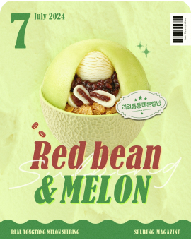
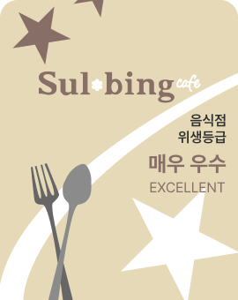
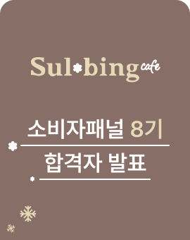

[24년 7월] 설빙 SPECIAL COUPON DAY! 🎁
담으면 담을수록 혜택이 커지는 시~원한 세일!
2024-08-02
[24년 7월] 설빙과 함께라면 한여름도 두렵지 않지!
본격적인 무더위 시작이라니... 메론설빙을 더 맛있게 즐길 수...
2024-08-02

[24년 7월] 달콤하고 푸짐한 메론설빙 3형제 등장...
뭐지... 이 귀여운 빙수는? 🙄 각자의 매력이 확실한 빙수...
2024-08-02

[24년 7월] 설빙에서 시~원한 설캉스 가자!
가득 찬 단팥과 메론을 한번에 즐길 수 있는 리얼통통메론...
2024-08-02
[24년 7월] 설빙에서 빙수만 먹기 아쉽다면?
맵단맵단 조합으로 더 다채롭게 즐기자! =͟͟͞͞♡
2024-08-02

[24년 7월] 메론이 통으로 나오는 빙수가 있다고?
통으로 나온 메론을 벌집 모양으로 잘라먹으면 얼~마나...
2024-08-02

[공지] 설빙 위생등급 매장을 소개합니다.
2024년 1월 기준 위생등급 인증 매장 현황입니다.
2024-08-02

[공지] 소비자패널 8기 합격자 발표
참여해주신 모든 분들께 진심으로 감사드립니다.
2024-08-02